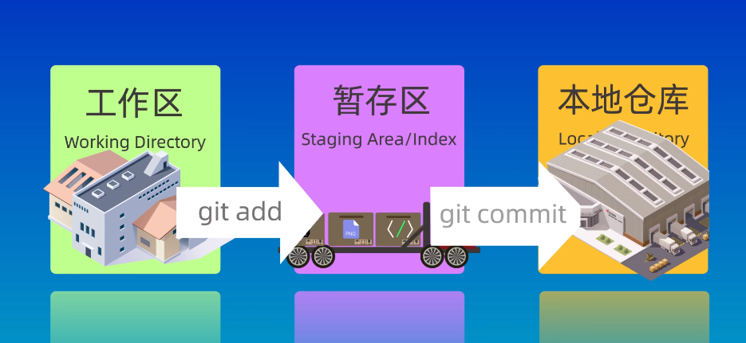
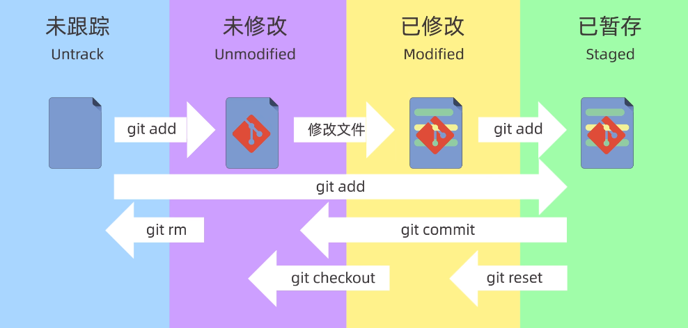
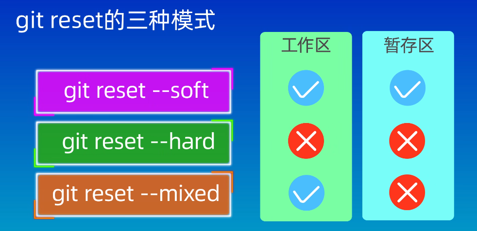
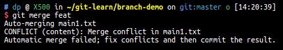
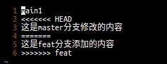
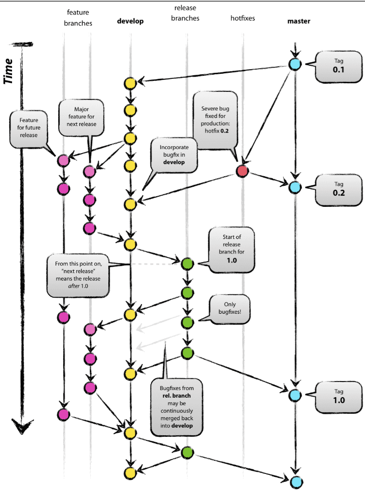
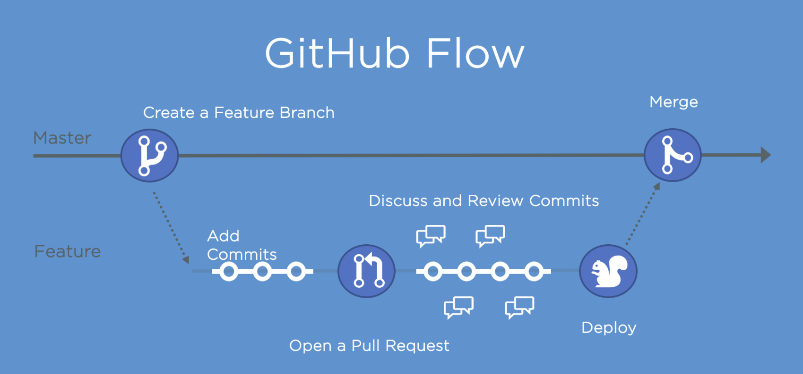
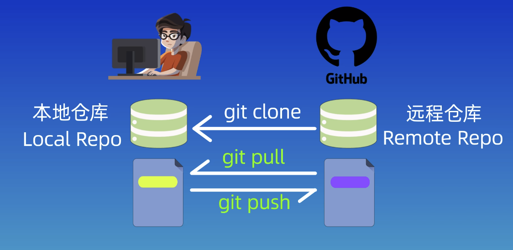

Git
常用命令
git init：在执行路径内初始化一个 .git/
仓库
工作区（Working
Directory）：.git/文件夹的上级路径，也是实际操作所在的目录
暂存区/索引（Staging
Area/Index）：.git/index/，用于临时存放即将提交到Git仓库的内容
本地仓库（Local
Repository）：.git/objects，存储代码和版本信息的主要位置
git add <file/dir>：将工作区中的文件添加到暂存区
git ls-files：查看位于暂存区中的文件
git commit -m "message"：将暂存区中的文件提交到本地仓库
-a：同时使用该参数可以一并完成暂存和提交两个动作
git status：查看哪些文件在工作中（Untracked），哪些在暂存区中（Changes
to be committed）
git log [--oneline]：查看历史commit记录，包含了每一次提交的ID
git reset [--soft/--hard/--mixed] <ID>：回退仓库版本，并选择性保存工作区和暂存区的内容



git diff [HEAD/--cached][area1] [area2] [filename]：比较版本差异
- 无参数：默认比较工作区和暂存区的差异
HEAD：比较工作区和版本库的差异--cached：比较暂存区和版本库的差异area1和area2：可设置版本号（提交ID），比较两个版本之间的差异，表示area2相对于area1的变化filename：仅比较某一个文件的差异HEAD：当前版本，HEAD^：当前版本的上一个版本，HEAD~N：当前版本之前的第N个版本
git rm [--cached] <file/dir>：同时删除工作区和暂存区中的文件，需要commit才能删除版本库中的文件
--cached：把文件从暂存区中删除，但保留在当前工作区中rm -r *：递归删除所有子目录和文件
分支
git branch <branch-name>：创建一个分支，注意
创建不等于切换
git branch -d <branch-name>：删除一个分支，注意只有当该分支被合并之后才能成功删除
git switch <branch-name>：切换到一个分支上，该操作改变工作区的内容
git checkout命令也可以用于切换分支，但还用于恢复文件或目录到之前的某一个状态，如果有一个分支名称与该文件或目录名称相同时，会出现歧义，此时checkout命令将默认执行切换分支，而非恢复文件，因此建议使用git switch命令切换分支。
git merge <branch-name>：将指定分支合并到当前所在的分支中
merge的结果是指定分支汇合到当前分支上，在graph中仍然能看见另一条分支的路径
git merge --abort：中止合并
git log --graph --oneline --decorate --all：查看分支图
分支冲突
当两个分支修改了同一个文件的同一行代码时，Git无法决定应该保留哪份内容，需要手动解决冲突。
可以使用git status查看冲突文件的列表，使用git diff命令查看冲突的具体内容


（注意到此时发生内容冲突的文件在工作区中已经被Git添加了冲突注释，而暂存区中仍然保留了上一次执行git add时的文件内容，因此
git diff 比较工作区和暂存区内容是可以查出来差别的。）
手动修改冲突文件内容，并重新git add和git commit即可
Rebase变基
git rebase <branch-name>：将当前分支变基到指定分支上
- 例如有两个分支分别叫main和dev，如果在dev分支上执行
git rebase main，则git将找到dev和main两个分支的分叉点，并把该分叉点往上的所有dev分支提交全部移动到main分支的最近提交上。 - rebase命令的结果是将当前分支在分叉点往上的部分整个移动到指定分支上，合并完在graph中只有一条支干
Rebase和Merge的区别：
- Merge不会破坏原分支的提交历史，方便回溯和查看，但会产生额外的提交节点，导致分支图比较复杂
- Rebase不会新增额外的提交记录，形成线性历史，比较直观干净。但会改变提交历史，改变当前分支branch out的节点，因此需要避免在共享分支使用rebase
分支管理与工作流模型
GitFlow
主线/基线分支 Main/Master：只接受来自hotfix和release的合并请求，不允许直接push修改
使用Git Tag定义版本号（例如1.0.0），规则如下：
主版本（Major Version）：主要的功能变化或重大更新
次版本（Minor Version）：一些新的功能、改进和更新，通常不会影响现有功能
修订版本（Patch Version）：一些小的bug修复，安全漏洞补丁等，通常不会更改现有功能和接口
开发分支 Develop：从主线分支中分离出来的长期存在的核心分支，包含项目最新开发代码，用于开发和测试
功能分支 Feature：从开发分支中分离出来的分支，用于开发某一个新功能，当该功能稳定后将合并回开发分支
预发布分支 Release：包含项目最新预发布版本代码，用于发布前的测试和验证，该分支一般从开发分支中分离出来，当该分支代码稳定后，会合并回主分支和开发分支中，再将预发布分支删除
根据生命周期可以划分两种分支：主要分支（Master和Develop）和辅助分支（Others），主要分支长期存在，辅助分支在完成各自功能后删除

GitHub Flow
仅有一个长期存在并可以直接发布的主分支 Main/Master，禁止直接提交到主分支上
团队成员从主分支分离出各个功能模块的分支并独立开发测试，在本地分支提交代码，在开发完成时发起一个 拉请求/合并请求（PR, Pull Request），在代码经过Review评审后可以发布该PR并合并到主分支中（MR, Merge Request）

分支命名：使用带有意义的描述性名称来命名分支
- 版本发布分支/Tag示例：v1.0.0
- 功能分支示例：feature-login-page
- 修复分支示例：hotfix-#issueid-desc
分支管理：
- 定期合并已经成功验证的分支，及时删除已经合并的分支
- 保持合适的分支数量
- 为分支设置合适的管理权限
关联本地仓库和远程仓库
ssh-keygen -t rsa -b 4096：生成大小为4096，协议为rsa的ssh密钥
添加公钥
id_rsa.pub到Github若本地保存了多个不同名SSH密钥，则需要在
~/.ssh/路径中添加一个名为 config的文件，内容如下。表示当需要关联Github时，使用名为test的密钥1
2
3
4
5# github
Host github.com
HostName github.com
PreferredAuthentications publickey
IdentityFile ~/.ssh/test
git clone <remote-url>：克隆远端仓库到本地
git remote add origin <remote-url>：添加一个远程仓库并起别名
origin，注意 添加不等于关联
git remote -v：查看本地仓库关联的远程仓库别名与地址
git push <remote-name> <local-branch>:<remote-branch>：将本地仓库的内容推送到远程仓库
git push -u origin main:main：将本地仓库与别名为origin的远程仓库关联起来，并将本地仓库的main分支推送给远程仓库的main分支-u：upstream，上游的意思，指定远程仓库main:main：本地分支：远程分支，当要推送的本地分支与远程分支同名时，可以省略:main
git pull <remote-name><remote branch>:<local branch>：拉取远程仓库的内容，并自动与本地仓库合并
- 远程仓库中的修改内容和本地仓库中的修改内容冲突时，合并失败，需要手动解决冲突

.gitignore文件
https://git-scm.com/docs/gitignore
执行顺序：从上到下依次执行，后执行的会覆盖先执行的
提交时需要忽略的文件：
- 系统或软件自动生成的文件
- 编译时产生的中间文件和结果文件
- 运行时生成的日志文件、缓存文件、临时文件
- 涉及身份、密码、口令、密钥等敏感信息的文件
匹配规则：
- 空行或以
#开头的行会被Git忽略，一般空行用于可读性分割，#一般用于注释 - 正则表达式匹配，例如
*匹配任意字符?匹配单个字符[]表示匹配列表中单个字符，如[abc]表示a/b/c[-]表示区间内任意匹配，例如[0-9]、[a-z]、[A-Z]!表示取反
- 两个星号
**表示匹配任意的中间目录